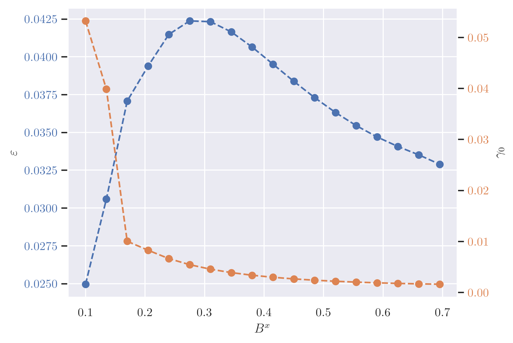
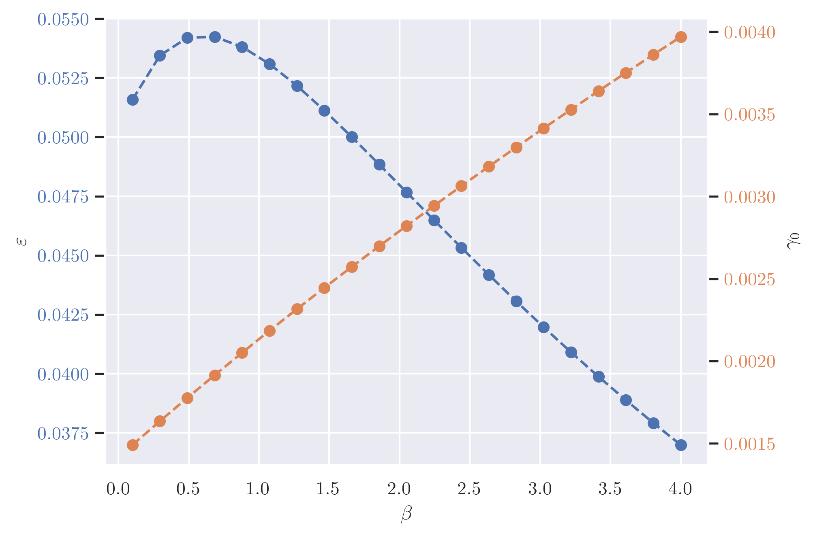
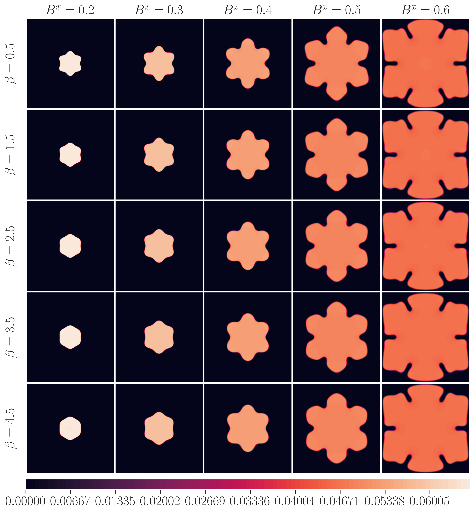
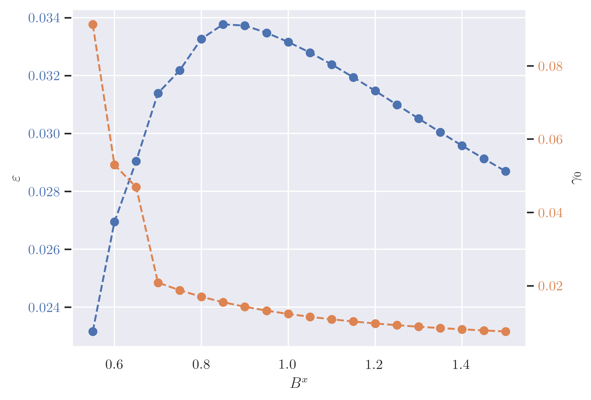
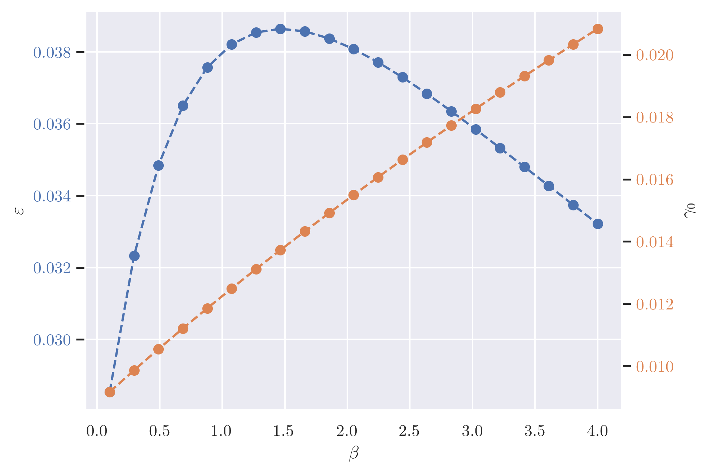
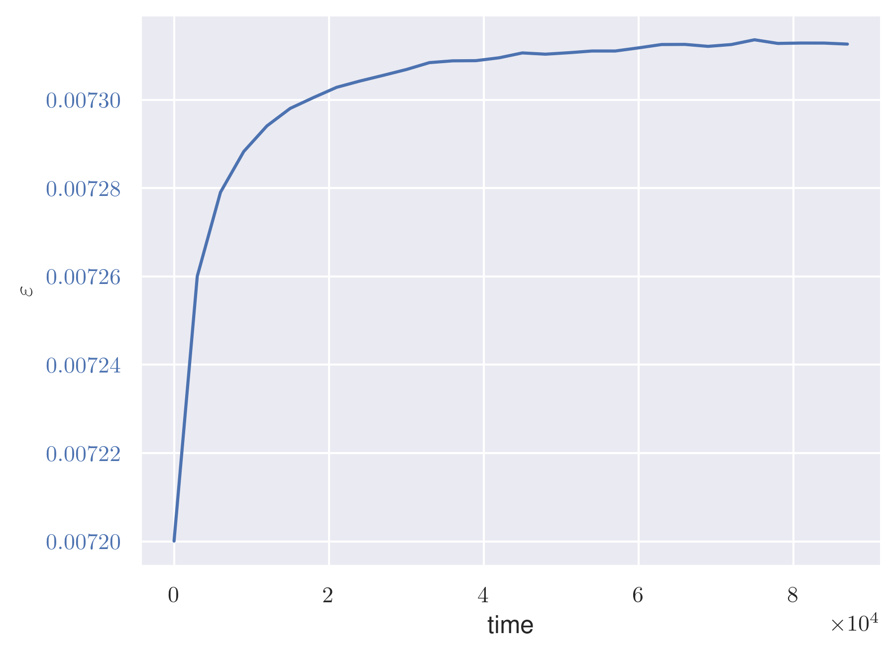

2023-04-17#
Param Set 1#
This is the parameter set Maik used to generate his dendrite.
\(B^x\) |
\(\Delta B^0\) |
initial \(n_0\) |
\(\mathrm{d}t\) |
t |
v |
|---|---|---|---|---|---|
\(0.45981\) |
\(0.14019\) |
\(0.849\) |
\(5.0\) |
\(0.5\) |
\(1/3\) |
Then I varied \(B^x\) and \(\beta\) seperately and measured the surface energy at equilibrium. The fit values are plotted:
 
For this parameter set I also did 2d simulation for 25 \(\beta\) and \(B^x\) combinations. The plot shows all simulations at time \(=60000\). It seemed to me that the grain never truly stops growing, or maybe my domain was always to small.

I plan to create a plot where all the grains are roughly the same size in a bigger domain to get a better comparisson for the \(B^x\) values. But the simulations take a lot of time on my machine.
Param Set 2#
This is the parameter set from the Yeon et al.YHET10 paper.
\(B^x\) |
\(\Delta B^0\) |
initial \(n_0\) |
\(\mathrm{d}t\) |
t |
v |
|---|---|---|---|---|---|
\(0.988\) |
\(0.012\) |
\(-0.03\) |
\(5.0\) |
\(0.5\) |
\(1/3\) |
 
I plan on doing a 2d simulation similar to the first parameter set.
Surface Energy for n0 const#
I chose a different definition of the chemical potential to calculate the surface energy (See the Surface Energy Section).
In equilibrium or close to it, the definition also matches the results used in the Ofori-Opoku et al.OOWV18 paper for the \(n_0\) simulations.
Technically, the surface energy calculation could now be used for the simulations with \(n_0 = \text{const.}\). However, because the grain continuously grows if the solid state is favored, the \(\gamma_0\) parameter also continuously grows. \(\varepsilon\) seems to approach some stable value at least visually. If it actually converges, \(\varepsilon\) would be the only usable parameter. I would need to run this simulation much longer on a much bigger domain to tell.
